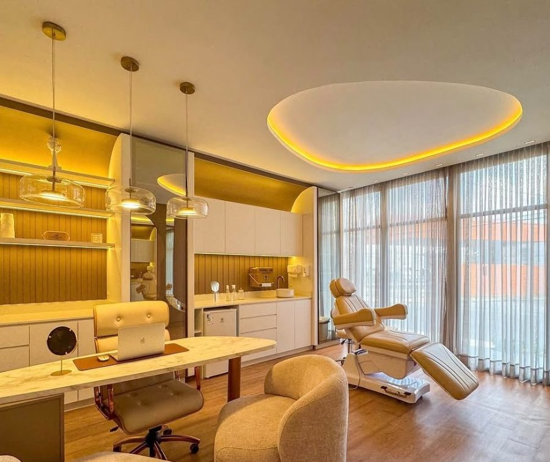
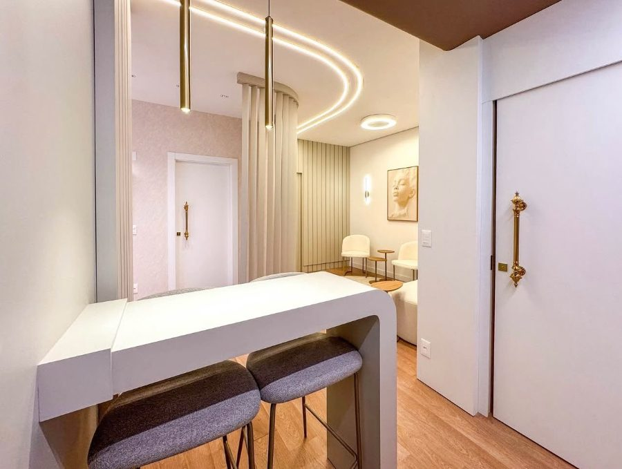
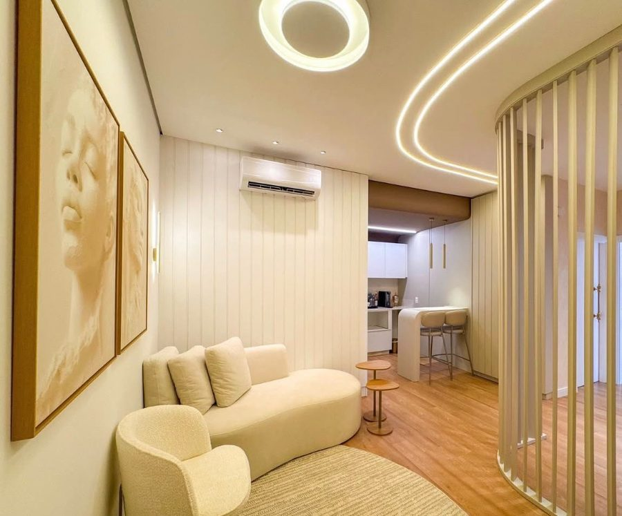
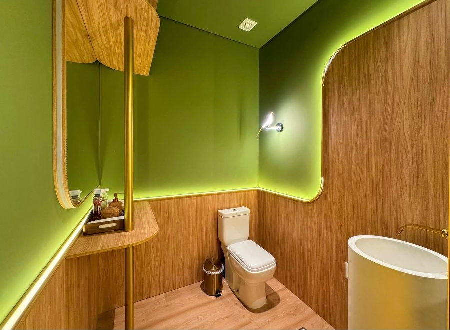
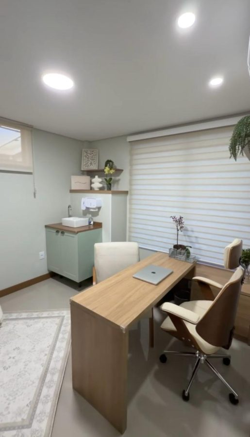
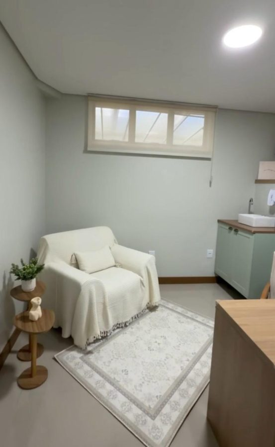
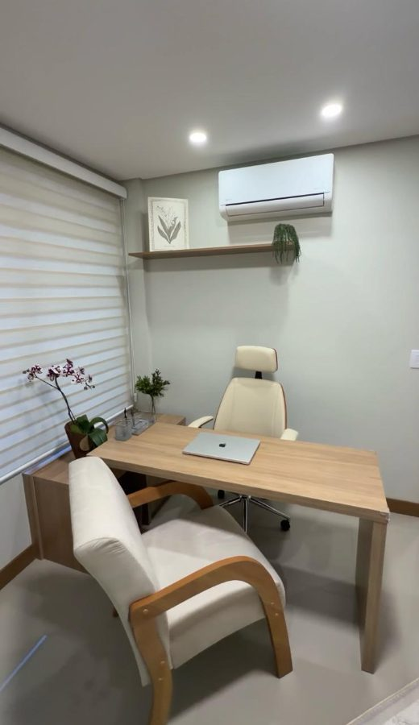
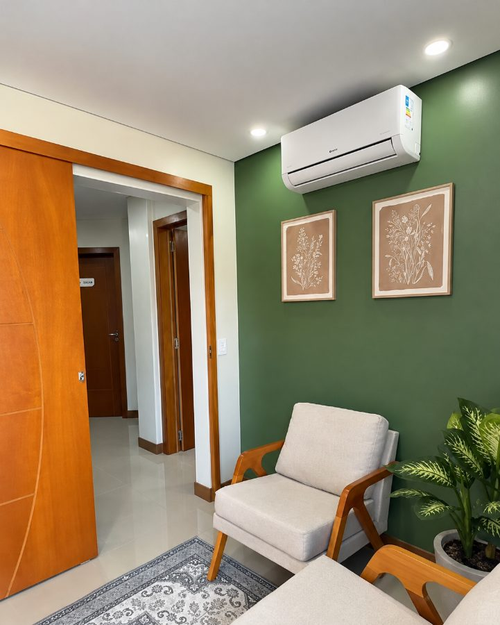

Itajaí – SC




O mapa é carregado do Google só depois que você clicar.
Abrir no Google Maps o endereço de Itajaí (abre em nova aba)Silvana Bolina, Psicóloga clínica e organizacional, CRP 12/23806
Sou Silvana Bolina. Atendo adolescentes, adultos e idosos, online e presencialmente, e também brasileiros que moram no exterior. Cada conversa começa com escuta, respeito e atenção à sua história.
Às vezes é difícil colocar em palavras o que a gente sente. Veja se alguma dessas frases parece com você.
“Sinto um peso no peito e não sei explicar.”
“Já tentei de tudo e continuo me sentindo sozinha.”
“Meu filho adolescente mudou e não sei como ajudar.”
“Depois de uma perda, a vida perdeu a cor.”
“Estou perdido na minha carreira.”
“Preciso recomeçar, mas tenho medo.”
Se você se identificou, saiba: você não está sozinho(a). Pedir ajuda é um ato de coragem.
Quero agendar uma conversaVenho de uma família simples e carrego comigo uma história de fé, determinação e superação. Foi Deus quem me sustentou e guiou meus passos até aqui.
Há mais de 15 anos, dedico minha vida ao cuidado com as pessoas. Sou psicóloga clínica e organizacional (CRP 12/23806), especialista em saúde emocional feminina e neuropsicologia.
Sei de perto o que significa enfrentar desafios e encontrar forças para recomeçar. Por isso, acredito que cada história merece ser ouvida com sensibilidade, acolhimento e respeito, porque cada pessoa tem seu próprio tempo para florescer.
15+ anos
Mestrado internacional
Emocional feminino
Neuropsicologia
Formando alicerces baseados no princípio cristão e na ciência.
Trabalho com a Terapia Cognitivo-Comportamental (TCC), uma abordagem científica que ajuda a observar como pensamentos, emoções e ações se relacionam e a encontrar outras formas de lidar com as dificuldades. Meus valores cristãos guiam a forma como acolho cada pessoa: a fé faz parte da minha história, e o atendimento segue os métodos da psicologia.
Atendo pessoas de todas as crenças, com respeito à fé e à história de cada um.
Psicóloga online e presencial para adolescentes, adultos e idosos, com base na Terapia Cognitivo-Comportamental. Cada pessoa tem seu tempo e sua história — o cuidado é feito sob medida.
Para quem é: jovens que estão passando por mudanças, dúvidas e pressões da idade.
Para quem é: mulheres e homens que querem cuidar da saúde emocional.
Para quem é: quem vive a maturidade e quer um espaço de escuta e cuidado.




O mapa é carregado do Google só depois que você clicar.
Abrir no Google Maps o endereço de Itajaí (abre em nova aba)



O mapa é carregado do Google só depois que você clicar.
Abrir no Google Maps o endereço de Balneário Camboriú (abre em nova aba)Escolha o formato que combina com a sua rotina. O cuidado e o sigilo são considerados nas duas modalidades.
Um espaço tranquilo e reservado, pensado para você se sentir à vontade para falar.
Online, no Brasil e no exterior
As sessões são por videochamada. Para isso, você precisa de internet e de um espaço privado.
Meu mestrado foi dedicado ao desenvolvimento de pessoas e carreiras. Cada trajetória tem seus próprios desafios. Este espaço é para olhar com calma para o que você já construiu e pensar nos próximos passos profissionais.
Explore possibilidades de crescimento, mudança de área ou novos desafios de liderança.
Fortaleça recursos para conduzir equipes, seja em uma nova função ou na gestão do dia a dia.
Organize um currículo que apresente sua experiência e suas qualidades de forma clara e coerente com seus objetivos.
Organize suas ideias e pratique como falar sobre sua trajetória com mais clareza e segurança.
Reconheça seus pontos fortes e encontre maneiras próprias de comunicá-los no trabalho.
Planeje mudanças, recolocação ou o retorno ao mercado após um período de pausa.
Saúde emocional também se aprende em grupo. Ofereço palestras sobre saúde mental e treinamentos para empresas, igrejas, escolas, eventos e grupos de mulheres. A informação é séria, em linguagem simples, e cada encontro é adaptado ao público.
Agora também sou apresentadora do canal Social TV e do programa Vem com as Gurias. São espaços para criar conexões com pessoas no Brasil e no exterior, falando sobre saúde emocional, carreira, empreendedorismo e o papel da mulher no mundo de hoje.
Sou apresentadora do canal Social TV, com conversas sobre saúde emocional, carreira, empreendedorismo e o papel da mulher hoje.
Conhecer o canal Social TV (abre em nova aba)Junto com outra psicóloga, apresento o Vem com as Gurias, um programa ao vivo que une o Brasil e a Europa. Duas psicólogas, um só propósito: conversar sobre temas que fazem diferença na vida das pessoas e criar conexões com quem está aqui e lá fora.
Ao vivo todas as quintas‑feiras, às 20h (horário de Brasília)
Assistir ao programa Vem com as Gurias (abre em nova aba)Toda pessoa merece viver com segurança e respeito.
Acredito na força de recomeçar e na importância de encontrar apoio psicológico. Falar sobre violência doméstica, acolher sem julgamentos e divulgar caminhos de ajuda são passos para que mais pessoas possam construir uma vida com esperança.
Relatos de participantes e instituições sobre palestras, treinamentos e orientação de carreira.
“[Relato autorizado sobre a experiência na atividade.]”
“[Relato autorizado sobre a experiência da equipe.]”
“[Relato autorizado sobre a orientação de carreira.]”
Respostas simples para ajudar você a entender como funciona o atendimento.
É um primeiro momento para conversar sobre o que trouxe você ao atendimento, tirar dúvidas e conhecer suas necessidades. As próximas etapas são combinadas com cuidado e respeito ao seu ritmo.
O atendimento acontece por videochamada, em um espaço reservado. É importante ter internet e privacidade. A adequação dessa modalidade é conversada com cada pessoa.
Sim. O atendimento online é feito em português e atende pessoas que vivem no exterior, como em Portugal, na Espanha e na Argentina. Os horários são combinados considerando o fuso de cada país.
Sim, há atendimento para adolescentes. A participação e autorização dos responsáveis são alinhadas conforme a idade e as necessidades do caso, respeitando as orientações éticas da profissão.
Não. Atendo pessoas de todas as crenças, com respeito à fé e à história de cada um.
É uma abordagem da psicologia que ajuda a observar como pensamentos, emoções e ações se relacionam e a construir formas mais saudáveis de lidar com as situações.
A duração da sessão será informada pela profissional quando esse dado for confirmado.
Consulte a disponibilidade para a sua cidade e o formato do evento pelo WhatsApp.
Escolha o canal que preferir. Por cuidado com a sua privacidade, não envie informações íntimas ou detalhes sensíveis por mensagem.
Rua José Gall, nº 1001, Dom Bosco, Itajaí – SC
Abrir no Google Maps (abre em nova aba)Rua Dom Luiz, nº 199, Vila Real, Balneário Camboriú – SC
Abrir no Google Maps (abre em nova aba)